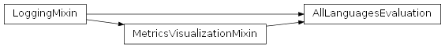
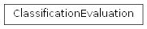
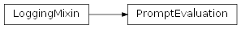

SentimentAnalysis.src.sentiment_analysis.evaluation package
Submodules
SentimentAnalysis.src.sentiment_analysis.evaluation.all_languages_evaluation module
all_languages_evaluation.py
Version 1.0, updated on 2024-12-14
- class SentimentAnalysis.src.sentiment_analysis.evaluation.all_languages_evaluation.AllLanguagesEvaluation[source]
Bases:
MetricsVisualizationMixin,LoggingMixinAllLanguagesEvaluation class
- _compute_mean_metrics() None[source]
Computes the mean metrics DataFrame.
Computes the mean metrics from the aggregated metrics and stores the resulting DataFrame in the mean_metrics property of this class.
- add_to_overall_metrics(metrics: MyDataFrame) None[source]
SentimentAnalysis.src.sentiment_analysis.evaluation.classification_evaluation module
classification_evaluation.py
Version 1.0, updated on 2025-05-01
- class SentimentAnalysis.src.sentiment_analysis.evaluation.classification_evaluation.ClassificationEvaluation(name: str = '', correct_labels: Series | None = None, predicted_labels: Series | None = None)[source]
Bases:
objectClassificationEvaluation class.
This class provides the tools for the evaluation of classification results.
- LABELS: List[str] = ['positive', 'negative', 'neutral']
- __init__(name: str = '', correct_labels: Series | None = None, predicted_labels: Series | None = None)[source]
Initiates the ClassificationEvaluation class with the given parameters.
Initiates the ClassificationEvaluation class with correct and predicted labels.
- Parameters:
name (str) – The name of the performed classification, used to name the set of metrics.
correct_labels (Series) – The correct labels to compare the classification results to.
predicted_labels (Series) – The labels predicted in the classification process, to be compared to the correct labels.
- _compute_average_metrics(metric_name: str, func) None[source]
Computes average metrics and sets them in the metrics dictionary.
- _compute_metrics_per_label(metric_name: str, func) None[source]
Computes metrics for each class.
Computes metrics for each class and sets them in the metrics dictionary.
Notes
The zero_division=0 parameter makes the precision, recall and f1 metrics ignore samples for which no predicted label is given, to prevent division by zero errors.
- _get_metric(metric_name: str, metric_func, **kwargs) float[source]
Generic method to get the metric.
Computes the metric if it is not set.
Notes
The zero_division=0 parameter makes the precision, recall and f1 metrics ignore samples for which no predicted label is given, to prevent division by zero errors.
- _treat_none_values(labels: Series) Series[source]
Replaces None values in the given Series by an empty string or 0.
Replaces None values in the given Series by an empty string or 0, depending on the data type of the Series.
- Parameters:
labels (Series) – The Series possibly containing None values.
- Returns:
The Series with None values filled.
- Return type:
Series
- property accuracy: float
Gets the accuracy.
Gets the proportion of correctly predicted labels among all labels.
- compute_metrics() None[source]
Computes the metrics for the evaluation of the sentiments prediction.
Computes the metrics for the evaluation of the sentiments prediction and stores them in the dictionary of the metrics property.
- property correct_labels: Series
Gets the correct labels.
- property name: str
- property predicted_labels: Series
Gets the predicted labels.
SentimentAnalysis.src.sentiment_analysis.evaluation.cross_strategy_prompt_evaluation module
cross_strategy_prompt_evaluation.py
Version 1.0, updated on 2025-01-02
- class SentimentAnalysis.src.sentiment_analysis.evaluation.cross_strategy_prompt_evaluation.CrossStrategyPromptEvaluation[source]
Bases:
PromptEvaluationCrossStrategyPromptEvaluation class.
- _add_to_chunk_col_map(col_names: List[str], target_col_name: str) None[source]
Adds or maps column names to a new target column name.
Handles the renaming of columns in ‘overall_chunk’ by adding entries to ‘chunk_col_map’ or processing duplicate column names.
- Parameters:
col_names (List[str]) – List of current column names to be mapped.
target_col_name (str) – New column name to which the current names will be mapped.
- Raises:
NotImplementedError – If more than two identical query column names are encountered.
- _align_query_nrs() None[source]
Aligns query numbers across all best prompts.
Ensures that query numbers in the ‘overall_best_prompts` and the corresponding columns in the ‘overall_chunk’ are renumbered consecutively. The renumbering facilitates consistency and subsequent analysis.
Notes
Updates ‘chunk_col_map’ to reflect the renumbered columns.
Renames and reorders columns in ‘overall_chunk’ to match the updated query numbers
- _extract_best_prompts(best_query_nrs: List[str]) None[source]
Extracts the specified best queries from all queries.
Extracts the specified best queries from all queries and assembles them in the overall_best_prompts dictionary of this class.
- Parameters:
best_query_nrs (List[str]) – List of column names of the best prompts.
Notes
This method does not return the extracted queries. Instead, it stores them in the overall_best_prompts dictionary of this class.
- _handle_double_col_names_in_overall_chunk(col_names: List[str], target_col_name: str) None[source]
Resolves duplicate column names in the overall chunk.
Handles cases where the same query appears multiple times (e.g., as ‘_x’ and ‘_y’ suffixes) and renames or maps them accordingly. If unexpected cases arise, applies a fallback renaming strategy.
- Parameters:
col_names (List[str]) – List of duplicate column names.
target_col_name (str) – Target column name to resolve the duplicates against.
Notes
Renames columns in the ‘overall_chunk’ DataFrame to avoid conflicts.
Updates ‘chunk_col_map’ with resolved column mappings.
Applies a fallback strategy for unexpected cases.
- Raises:
CriticalException – If an unresolvable case is encountered during renaming.
- _map_overall_chunk_columns(current_query_nr: str, target_query_nr: str) None[source]
Maps the current overall_chunk column name to a new column name.
Adds a current column name/target column name pair to the chunk_col_map dictionary of this class. When completed, the dictionary is used to replace the current column names by the target column names.
- _save_overall_best_prompt_ingredients_sets() None[source]
Saves the overall best prompt ingredients sets.
- _save_overall_best_prompts() None[source]
Saves the overall best prompts re-indexing the dictionary.
Notes
“Re-indexes” the overall_best_prompts dictionary to match the positional index of the elements in overall_best_prompt_ingredients_sets. The keys in the overall_best_prompts dictionary correspond to the index numbers + 1 in the overall_best_prompt_ingredients list.
- join_best_prompts(versions: List[str] | None = None) None[source]
Joins the best prompts from multiple prompt set versions.
- Parameters:
versions (List[str]) – List of versions the best prompts are to be collected from.
Notes
The collected best prompts are not returned from this method but saved so that they can be retrieved in later runs of the program.
The prompt engineering and optimization having been performed on English samples only, the language targeted in this method is also English.
SentimentAnalysis.src.sentiment_analysis.evaluation.deep_prompt_evaluation module
deep_prompt_evaluation.py
Version 1.0, updated on 2025-01-10
- class SentimentAnalysis.src.sentiment_analysis.evaluation.deep_prompt_evaluation.DeepPromptEvaluation(data: MyDataFrame = None, language: str = 'en')[source]
Bases:
MetricsVisualizationMixin,LoggingMixinDeepPromptEvaluation class.
This class evaluates prompts by analyzing their components and computing metrics.
- __init__(data: MyDataFrame = None, language: str = 'en')[source]
Constructor.
Initializes the DeepPromptEvaluation class with the given parameters.
- Parameters:
data (MyDataFrame) – MyDataFrame instance containing a DataFrame with different query columns and the corresponding answers retrieved from the LLM’s API. These data are needed to evaluate the quality of the different prompts.
language (str) – Language code indicating the language of the sentences for which the queries were formulated. Defaults to English (‘en’).
- _add_basic_ingredient(df: DataFrame, prompt_name: str, prompt_part_category: str, prompt_part_value: str) DataFrame[source]
Adds basic ingredients to the provided DataFrame.
For the given prompt part category, adds basic ingredients variantsto the provided DataFrame.
- dfDataFrame
A DataFrame whose rows represent the prompts, with a rank column containing the rank the prompt has received, and columns representing basic ingredients like “before_sentence”, “before_mention”.
- prompt_namestr
The prompt name (e.g. “en_1”) indicating the row in which to add the ingredients derived from the prompt_part_value parameter.
- prompt_part_categorystr
Prompt part category like “before_sentence” or “question” for which to retrieve basic ingredients categories like “sentence_label”, “politeness”, “toward” etc.
- prompt_part_valuestr
Concrete prompt part in which to identify basic ingredients to insert into the DataFrame, e.g. “Can you specifiy the opinion in the statement targeted at the individual.
- Here is the
statement: “.
- DataFrame
The DataFrame with the found basic ingredients added.
- _analyze_high_correlations(corr_matrix: DataFrame, threshold: float = 0.7) DataFrame[source]
Keeps only ingredients with high absolute correlation values.
Keeps only ingredients with absolutecorrelation values above the given threshold.
- Parameters:
corr_matrix (DataFrame) – A Pandas DataFrame representing the correlation matrix.
threshold (float) – The threshold for keeping ingredients with high correlation values. Defaults to 0.7.
- Returns:
The reduced correlation matrix.
- Return type:
DataFrame
- _analyze_rank_correlations(corr_matrix: DataFrame) None[source]
Analyzes the rank correlations for specific prefixes in the matrix.
The method processes the input correlation matrix to extract correlations of all parts of the prompt with the rank, excluding self-correlation of the “rank” itself. It then utilizes unique prefixes from the correlation indices to identify structured groups of correlations. Finally, it sorts and visualizes the partial correlations for each prefix using a heatmap.
- Parameters:
corr_matrix (DataFrame) – A Pandas DataFrame representing the correlation matrix. It must contain a column named ‘rank’, which includes the correlations of various prompt elements with the rank.
Notes
This method does not return a value; instead, it visualizes a heatmap for specific partial rank correlations.
- _decompose_prompts() None[source]
Decomposes prompts into basic ingredients.
Sets the decomposed_prompts property.
Notes
This implementation supposes there is only one basic ingredient per prompt part.
- _encode_prompt_ingredients() None[source]
Applies one-hot encoding in preparation of the correlation analysis.
The resulting encoded prompt ingredients DataFrame is stored in the corresponding property.
- _find_high_corr_rows(corr_matrix: DataFrame, threshold: float = 0.7) List[str][source]
Identifies rows with high correlation values (positive or negative) in the given correlation matrix based on the specified threshold. The function excludes self-correlations by masking diagonal elements with NaN and then checks if any value in a row exceeds the threshold in magnitude.
- Parameters:
corr_matrix (DataFrame) – The correlation matrix containing pairwise correlation values. It is assumed to have the same index and column labels.
threshold (float) – The threshold used to detect high correlations. Rows with any value above this threshold or below -threshold (ignoring self-correlations) will be identified. Default is 0.7.
- Returns:
A list of index labels corresponding to the rows in the correlation matrix that have at least one correlation value exceeding the specified threshold in magnitude.
- Return type:
List[str]
- _get_basic_ingredients_categories_for_prompt_part_category(prompt_part_category: str) List[Any][source]
Retrieves the basic ingredients categories for a prompt part category.
Retrieves the basic ingredients categories from which a prompt part category is composed. Searches the prompt part category in the basic_and_composed_ingredients property and returns the corresponding list of basic ingredients categories.
- Parameters:
prompt_part_category (str) – Prompt part category like “before_sentence” or “question” for which to retrieve basic ingredients categories like “sentence_label”, “politeness”, “toward” etc.
- Returns:
The list of basic ingredients categories found for the prompt part category.
- Return type:
List[Any]
- _replace_language_specific_index(data: DataFrame | Series) DataFrame | Series[source]
Replaces the original language-specific index in a DataFrame or Series.
Replaces the language prefix with the overall prefix ‘prompt’
- add_macro_ranks() None[source]
Adds ranks to the metrics based on the macro metrics.
Notes
The metrics DataFrame is changed in place. The resulting DataFrame can be retrieved using the metrics getter of this class.
- add_prompt_freqs(evaluation: SinglePromptEvaluation) None[source]
Adds sentiment frequencies for a prompt to the all_freqs dictionary.
Adds the sentiment frequencies for a prompt to the overall dictionary of sentiment frequencies of all prompts.
Retrieves the frequencies for a single prompt from the SinglePromptEvaluation instance created for the prompt’s evaluation.
- Parameters:
evaluation (SinglePromptEvaluation) – The SinglePromptEvaluation instance created for the prompt’s evaluation.
- add_prompt_metrics(evaluation: SinglePromptEvaluation) None[source]
Adds computed metrics for a prompt to the overall metrics MyDataFrame.
The overall metrics MyDataFrame collects the metrics for all prompts.
- Parameters:
evaluation (SinglePromptEvaluation) – A SinglePromptEvaluation instance for the currently analyzed prompt that computes the prompt’s metrics.
- add_ranks() None[source]
Adds ranks to the metrics based on the macro metrics.
Notes
The metrics DataFrame is changed in place. The resulting DataFrame can be retrieved using the metrics getter of this class.
- property all_freqs: Dict[str, List[Tuple[str, int]]]
Returns the dictionary of sentiment frequencies for all prompts.
- Returns:
A dictionary where the keys are the names of the prompts and the values are lists of three tuples for the three sentiment classes where the first element constitutes the sentiment label and the second element is the frequency value.
- Return type:
Dict[str, List[Tuple[str, int]]]
- property all_freqs_df: DataFrame
Returns a DataFrame with the content of the all_freqs dictionary.
Returns the DataFrame from the all_freqs_my_df MyDataFrame object created from the all_freqs dictionary..
- property all_freqs_my_df: MyDataFrame
Creates and returns a MyDataFrame from the all_freqs dictionary.
- Returns:
The created MyDataFrame with the content of the all_freqs dictionary.
- Return type:
- property all_freqs_my_df_with_totals: MyDataFrame
Returns the all_freqs_my_df MyDataFrame with a column for the totals.
- Returns:
The all_freqs_my_df MyDataFrame with a column for the totals added.
- Return type:
- property best: MyDataFrame
- property cols_to_analyze: List[str]
Retrieves all names of ‘answer’ columns from the data chunk.
- Returns:
A list of names of columns in the data chunk that constitute ‘answer’ columns.
- Return type:
List[str]
Notes
The name of an ‘answer’ column starts with “answer_” followed by a prompt number that corresponds to one of the numbers used to identify the query columns in the chunk.
- compute_all_prompt_metrics() None[source]
Computes the metrics for all columns to analyze Instantiates a SinglePromptEvaluation instance for each column that is to be analyzed and adds prompt metrics and frequencies to collections of metrics and frequencies for all prompts.
Shows the overall frequencies after having added the sentiment frequencies for all prompts.
- property data: Chunk
Returns the data chunk.
- Returns:
The data chunk Chunk with samples, query and answer columns.
- Return type:
Chunk
- property decomposed_prompts: DataFrame
Returns the decomposed prompts.
- Returns:
The DataFrame with the decomposed prompts and their ranks.
- Return type:
DataFrame
- describe_answer_data() None[source]
Describes the answer data columns with the pandas describe() function.
Filters the DataFrame wrapped in the data MyDataFrame object for answer columns to the console and prints the filtered DataFrame to the console.
- describe_data() None[source]
Describes the data with the pandas describe() function.
Prints the DataFrame wrapped in the data MyDataFrame object to the console.
- property encoded_prompt_ingredients: DataFrame
Returns the one-hot-encoded prompt ingredients.
- Returns:
The one-hot-encoded prompt ingredients.
- Return type:
DataFrame
- get_partial_metrics(col_substring: str) MyDataFrame[source]
Extracts partial metrics based on the given column name substring.
Extracts columns from the metrics DataFrame whose column names contain the given substring.
- Parameters:
col_substring (str) – The substring to match column names with.
- Returns:
A MyDataFrame object containing the extracted columns.
- Return type:
Notes
If the columns to extract are macro metrics, the accuracy (‘acc’) column is also added to the returned MyDataFrame as it is also an overall metric.
- get_ranking(replace_language_prefix: bool = False) Series[source]
Returns the ranking replacing the language prefix in the row index.
Replaces the language prefix in the row names by a prefix that just identifies the respective prompt.
- Parameters:
replace_language_prefix (bool) – If set to True, the prefix replacement method is called. Otherwise, the row names of the ranking Series remain unchanged. Defaults to False.
- Returns:
The ranking Series with the new index (if this is replaced) or the old index (if the replace_language_prefix was not set to True.
- Return type:
Series
- property metrics: MyDataFrame | None
Returns the metrics MyDataFrame.
- Returns:
A MyDataFrame containing a DataFrame with the metrics where the metrics names are column names and the query variants rows with metrics values.
- Return type:
- property n_prompts: int
Returns the number of best (and worst) prompts to show.
- Returns:
The the number of best (and worst) prompts to show.
- Return type:
int
- property ranking: Series
- property worst: MyDataFrame
SentimentAnalysis.src.sentiment_analysis.evaluation.evaluation_workflow module
evaluation_workflow.py
Version 1.0, updated on 2025-01-02
- class SentimentAnalysis.src.sentiment_analysis.evaluation.evaluation_workflow.EvaluationWorkflow(strategy_nr: int = 1)[source]
Bases:
objectEvaluationWorkflow class
- evaluate_language(language: str = 'en') None[source]
Evaluates the prompts of the specified language.
- Parameters:
language (str) – The language of the prompts to evaluate.
Notes
Ensure you have moved the generated chunks files in the csv data folder to a subfolder named “chunks_v_” + the two-digit number of the prompt engineering strategy it was created by (e.g. “chunks_v_01”)
- evaluate_prompt_group(prompt_group: List[int], language: str = 'en') None[source]
Evaluates the given group of prompts in the specified language context.
Configures the evaluation environment by setting the specified language and performs an evaluation on the provided group of prompts.
- Parameters:
prompt_group (List[int]) – A list of integers representing the group of prompts to be evaluated.
language (str) – The language setting for the evaluation, given as a string. Default is ‘en’.
- Returns:
This method does not return any value but outputs results to the console.
- Return type:
None
SentimentAnalysis.src.sentiment_analysis.evaluation.language_results_processor module
language_results_processor.py
Version 1.0, updated on 2025-01-01
- class SentimentAnalysis.src.sentiment_analysis.evaluation.language_results_processor.LanguageResultsProcessor(language: str)[source]
Bases:
LoggingMixinLanguageResultsProcessor class.
This class processes managing and processing sentiment analysis results for a given language. It evaluates metrics, analyzes prompts, and facilitates comparison of results.
- language
The language being processed (e.g., “en” for English).
- Type:
str
- configSentimentAnalysisConfig
Configuration settings for sentiment analysis and associated tasks (prompt engineering, evaluation of predictions, etc.)
- metricsMyDataFrame
The metrics for the current language.
- dataChunk
The data with the batch samples and query and answer columns.
- evaluationDeepPromptEvaluation
A DeepPromptEvaluation instance, providing detailed prompt evaluation.
- analyze_prompts(partial_metrics: List[str] | None = None) None:[source]
Analyzes the prompts.
- get_best_query_nrs() List[str]:[source]
Retrieves the indices of the best-performing queries.
- process_language() None:[source]
Processes the language results.
- show_best_prompts(partial_metrics: List[str] | None = None) None:[source]
Displays the best-performing prompts based on the evaluation metrics.
- show_partial_metrics(partial_metrics: List[str], show_best: bool = False,
show_worst: bool = False) -> None:
Displays specified metrics for the best and/or worst prompts.
- show_worst_prompts(partial_metrics: List[str] | None = None) None:[source]
Displays the worst-performing prompts based on the evaluation metrics.
- verify_metrics_are_equal(metric_1: str, metric_2: str) bool:[source]
Compares two metrics and verifies if they are equal.
- __init__(language: str) None[source]
Constructor.
Initializes the LanguageResultsProcessor class with the provided language.
- Parameters:
language (str) – The language to process.
- _get_data_from_chunks() Chunk[source]
Uses the ChunKLoader to retrieve a valid queries chunk.
- Returns:
A chunk object with valid queries.
- Return type:
Chunk
- analyze_prompts(partial_metrics: List[str] | None = None) None[source]
Analyzes the prompts.
Finds best and worst prompts and correlations of prompt ingredients with valid/invalid prompts if there are enough different prompts to perform such an analysis.
- Parameters:
partial_metrics (List[str]) – List of partial metrics to show for the best and worst prompts. Defaults to None. If no partial metrics are provided, the show_best_prompts and show_worst_prompts methods will just show the best and worst prompt overall metrics values but will not display any partial metrics diagrams.
- property answer_cols: List[str]
- property data: Chunk
Retrieves the data with the batch samples and query and answer columns.
- Returns:
A chunk object containing the data.
- Return type:
Chunk
- property evaluation: DeepPromptEvaluation
Provides access to the evaluation instance.
- Returns:
The evaluation instance for analyzing metrics and prompts.
- Return type:
- get_best_query_nrs() List[str][source]
Retrieves the indices of the best-performing queries.
- Returns:
A list of indices corresponding to the best queries.
- Return type:
List[str]
- property metrics: MyDataFrame
Returns the metrics for the current language.
- Returns:
A MyDataFrame instance containing the sorted metrics DataFrame.
- Return type:
Notes
The metrics DataFrame is sorted in ascending order (from best to worst rank) by the ranks of the prompts.
- process_language() None[source]
Processes the language results.
Processes the language results by loading data chunks, creating an evaluation instance, and computing sorted metrics.
- show_best_prompts(partial_metrics: List[str] | None = None) None[source]
Displays the best-performing prompts based on the evaluation metrics.
- Parameters:
partial_metrics (List[str] | None) – A list of specific metrics to display for the best prompts. If None, only overall metrics are shown.
- show_partial_metrics(partial_metrics: List[str], show_best: bool = False, show_worst: bool = False) None[source]
Displays specified metrics for the best and/or worst prompts.
- Parameters:
partial_metrics (List[str]) – A list of metrics to display.
show_best (bool) – Whether to show the metrics for the best prompts.
show_worst (bool) – Whether to show the metrics for the worst prompts.
- show_worst_prompts(partial_metrics: List[str] | None = None) None[source]
Displays the worst-performing prompts based on the evaluation metrics.
- Parameters:
partial_metrics (List[str] | None) – A list of specific metrics to display for the worst prompts. If None, only overall metrics are shown.
- verify_metrics_are_equal(metric_1: str, metric_2: str) bool[source]
Compares two metrics and verifies if they are equal.
This method can be used to check two metrics that are supposed to be identical.
- Parameters:
metric_1 (str) – Name of the first metric. Should equal the column name of the respective metric values in the metrics DataFrame.
metric_2 (str) – Name of the second metric to compare. Should equal the column name of the respective metric values in the metrics DataFrame.
- Returns:
True if the values of the metrics are equal, False otherwise.
- Return type:
bool
SentimentAnalysis.src.sentiment_analysis.evaluation.metrics module
metrics.py
Version 1.0, updated on 2024-12-20
- class SentimentAnalysis.src.sentiment_analysis.evaluation.metrics.Metrics[source]
Bases:
objectMetrics class.
Provides a dictionary in which to store the metrics for the evaluation of the results.
SentimentAnalysis.src.sentiment_analysis.evaluation.metrics_visualization_mixin module
metrics_visualization_mixin.py
Version 1.0, updated on 2025-01-02
- class SentimentAnalysis.src.sentiment_analysis.evaluation.metrics_visualization_mixin.MetricsVisualizationMixin[source]
Bases:
LoggingMixin- show_best() None[source]
Displays a DataFrame containing the best queries.
Prints the DataFrame in a formatted box in the console.
- show_correlation_heatmap(correlation_data: Series | DataFrame) None[source]
Displays a correlation heatmap using the provided correlation data.
This method generates a heatmap based on the input data to visually represent correlation values between variables. It supports both pandas Series and pandas DataFrame objects. If a Series is provided, it uses a single dimension to plot the heatmap. If a DataFrame is given, it processes the data to construct a multi-dimensional heatmap.
- Parameters:
correlation_data (Series or DataFrame) – The data containing correlation values. Accepts either a pandas Series, which represents one-dimensional data, or a pandas DataFrame for multi-dimensional correlation values.
Notes
This method does not return any values. The methods it calls directly display the generated heatmap.
- show_partial_metric(metric: str = 'macro', show_best: bool = False, show_worst: bool = False) None[source]
Shows a diagram for the specified group of metrics.
The possible groups are defined by the submetrics property of this class.
- Parameters:
metric (str) – The group of metrics to show corresponding to one of the submetrics defined in the list returned by the submetrics property of this class.
show_best (bool) – Whether to show the best queries. Defaults to False.
show_worst (bool) – Whether to show the worst queries. Defaults to False.
- Raises:
CriticalException – If the given metric is not contained in the submetrics list.
- show_worst() None[source]
Displays a DataFrame containing the worst queries.
Prints the DataFrame in a formatted box in the console.
- property submetrics: List[str]
Gets the list of available submetrics.
- property thresholds: Dict[str, Dict[str, float]]
Gets the thresholds for the different metrics.
SentimentAnalysis.src.sentiment_analysis.evaluation.optimization_workflow module
optimization_workflow.py
Version 1.0, updated on 2025-05-01
- class SentimentAnalysis.src.sentiment_analysis.evaluation.optimization_workflow.OptimizationWorkflow(strategy_nr: int = 0)[source]
Bases:
objectOptimizationWorkflow class
- find_optimization_potential_for_language(language: str) None[source]
Finds optimization potentials for prompts for the given language.
This method evaluates the results of the sentiment predictions obtained with the different prompts in terms of valid and invalid prompt variants and prompt ingredients in order to know which ingredients should be eliminated and which ones should be preferred for better results.
Notes
This method does not return anything. Instead, it prints the results in the console.
SentimentAnalysis.src.sentiment_analysis.evaluation.prompt_evaluation module
prompt_evaluation.py
Version 1.0, updated on 2025-02-05
- class SentimentAnalysis.src.sentiment_analysis.evaluation.prompt_evaluation.PromptEvaluation[source]
Bases:
LoggingMixinPromptEvaluation class.
This class initializes and manages objects required for the evaluation of sentiment analysis results. It provides logging capabilities through the ‘LoggingMixin’ class.
- config
The sentiment analysis configuration object that holds configuration values and settings for the analysis process.
- Type:
SentimentAnalysisConfig
- prompt_engineer
The prompt engineer instance responsible for generating prompt configurations based on the provided version.
- Type:
- prompt_ingredients_sets
The collection of prompt ingredient sets generated by the prompt engineer.
- Type:
PromptsDictType
- _calculate_prompt_metrics_for_language(language: str) LanguageResultsProcessor[source]
Calculates prompt evaluation metrics for a specific language.
- Parameters:
language (str) – Language for which metrics are calculated.
- Returns:
LanguageResultsProcessor instance containing calculated metrics and analysis tools.
- Return type:
LanguageResultsProcessor
- _find_other_prompts(key: Any, value: Any) List[Any][source]
Finds prompt ingredient sets that contain the given key/value pair.
Finds entries in the prompt ingredient sets that contain the specified value for the specified key.
- Parameters:
key (Any) – The key to look up within the prompt ingredient sets.
value (Any) – The value that must match for the given key in the prompt ingredient sets.
- Returns:
list containing the numbers of all matched prompt ingredient sets.
- Return type:
List[Any]
- _get_group_ingredients_sets(prompt_group: List[int]) Dict[int, Dict[str, str]][source]
Gets the prompt ingredient sets for the specified prompt group.
- Parameters:
prompt_group (List[int]) – List of prompt numbers.
- Returns:
Dictionary with prompt numbers as keys and prompt ingredient sets as values.
- Return type:
Dict[int, Dict[str, str]]
- _mark_invalid_prompts(others: List[str]) List[str][source]
Surrounds invalid prompt numbers in parentheses.
- Parameters:
others (List[str]) – List of prompt numbers.
- Returns:
List of prompt numbers with invalid prompt numbers surrounded in parentheses.
- Return type:
List[str]
- _reset_language_dependent_properties() None[source]
Resets the language-dependent properties.
This method reinitializes the ‘language_results_processor’ property of the class by assigning it to None so that next time the processor is needed, it must be reinitialized with the updated language setting.
- property all_languages_evaluation: AllLanguagesEvaluation
Returns an instance of the AllLanguagesEvaluation class.
- Returns:
An instance of the AllLanguagesEvaluation class which provides various methods for the evaluation of the sentiment analysis results for all languages that have been processed.
- Return type:
- Raises:
NotImplementedError – if the AllLanguagesEvaluation instance has not been set.
- evaluate_prompt_group(prompt_group: List[int]) None[source]
Evaluates the specified group of prompts.
Analyzes the provided group of prompts by inspecting the corresponding ingredient sets and searching for hints why the group performed in the way it did. It establishes which ingredients were used throughout the group and which ingredients varied. It especially identifies the ingredients that were not used in any other prompts.
- Parameters:
prompt_group (List[int]) – A list of integer identifiers representing the prompt numbers of the members of the group to be evaluated.
Notes
The results of the evaluation are displayed in the console.
- evaluate_prompts(partial_metrics: List[str] | None = None) None[source]
Evaluates the prompts for all languages.
- Parameters:
partial_metrics (List[str] | None) – A list of specific metrics to display for the best and worst
- evaluate_prompts_for_language(language: str, partial_metrics: List[str] | None = None) LanguageResultsProcessor[source]
Evaluates the prompts for the given language.
Calculates the metrics and displays correlation maps and partial metrics for the number of best and worst prompts specified in the sentiment analysis configuration and finally for all prompts.
- Parameters:
language (str) – Language code of the language for which the prompts are to be evaluated.
partial_metrics (List[str]) – List of partial metrics to be analyzed. The partial metrics names can be chosen from the following list: - ‘macro’, - ‘f1’, - ‘precision’, - ‘recall’, - ‘positive’, - ‘negative’, - ‘neutral’ E.g., ‘macro’ will calculate and display all metrics belonging to the macro metrics, i.e. macro f1 score, macro precision, macro recall and the accuracy, ‘positive’ will calculate and display all metrics concerning the samples being classified as ‘positive’ by the sentiment analysis.
- Returns:
An instance of the LanguageResultsProcessor, enabling the caller to perform further statistical analyses, if required.
- Return type:
LanguageResultsProcessor
Notes
ATTENTION: Before you run this method you should ensure you have moved the generated chunks files in the csv data folder to a subfolder named “chunks_v_” + the two-digit number of the prompt engineering strategy it was created by (e.g. “chunks_v_01”).
- property language: str
Retrieves the language from the configuration settings.
If the language is not set, an exception is raised to indicate the critical nature of the missing configuration.
- Returns:
The language retrieved from the configuration.
- Return type:
str
- Raises:
CriticalException – If the language is not set in the configuration.
- property language_results_processor: LanguageResultsProcessor
Returns an instance of the LanguageResultsProcessor class.
The language results processor provides functionality required for processing the results of a language analysis. If the processor does not already exist, this method initializes it by invoking the ‘_set_language_results_processor’ method and then returns it.
- Returns:
The language results processor for handling language-related results.
- Return type:
LanguageResultsProcessor
- property languages: List[str]
Returns the list of languages that are to be evaluated.
If the languages have not been initialized, it retrieves them from the llm set in the sentiment analysis configuration.
- Returns:
A list of language codes, corresponding to languages to evaluate.
- Return type:
List[str]
SentimentAnalysis.src.sentiment_analysis.evaluation.single_prompt_evaluation module
single_prompt_evaluation.py
Version 1.0, updated on 2024-12-15
- class SentimentAnalysis.src.sentiment_analysis.evaluation.single_prompt_evaluation.SinglePromptEvaluation(correct_labels: Labels, col: Series, language: str = 'en', col_name: str = '')[source]
Bases:
LoggingMixinSinglePromptEvaluation class
- __init__(correct_labels: Labels, col: Series, language: str = 'en', col_name: str = '')[source]
Initializes the SinglePromptEvaluation class with the given parameters.
- Parameters:
correct_labels (Labels) – The correct labels the predicted labels are to be compared to.
col (Series) – The column containing the predicted labels.
language (str) – The language for which the prompt is used.
col_name (str) – The name of the column with the classification results to evaluate.
- compare_freqs() None[source]
Compares the frequencies of correct labels and predicted labels.
Outputs the comparison result to the console.
- compute_metrics() Any[source]
Computes the metrics for the answer column passed to this class.
Computes the metrics of the predicted labels based on the correct labels.
- property correct_labels: Labels
Gets the correct labels.
- Raises:
CriticalException – If no correct labels are set.
- property predicted_freqs: Tuple[str, List[Tuple[str, int]]]
Returns the prompt name and the frequencies of the predicted labels.
- Returns:
A tuple, where the first element is a string representing a prompt’s name und the second element a list of tuples where the first element is a sentiment label and the second element the frequency of the first element.
- Return type:
Tuple[str, List[Tuple[str, int]]]
- property predicted_labels: Series
Gets the predicted labels.